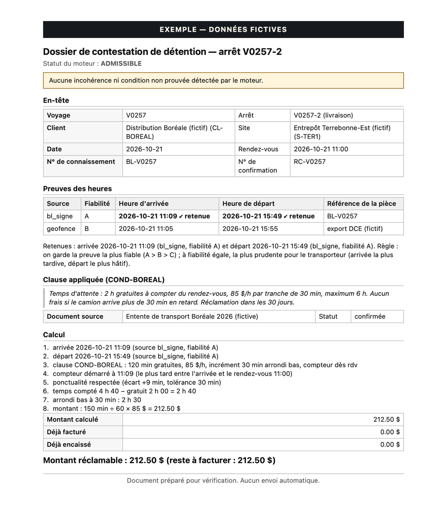

ORYVEX Détention
Chaque heure d'attente prouvée, facturée, encaissée.
Pour les transporteurs québécois qui attendent aux quais sans être payés.
Nous retrouvons, dans vos propres données, l'attente que vos contrats vous permettent de facturer, et nous préparons la preuve pour chaque arrêt.
Audit gratuit de vos trois derniers mois · sans engagement
Le problème
Pourquoi cette attente reste rarement facturée
Des heures éparpillées
L'arrivée est dans la télématique, le départ sur un connaissement, la confirmation dans un courriel. Personne ne les met côte à côte.
Une clause par client
Temps gratuit, taux, tranches, avis obligatoire, délai de réclamation : chaque contrat a ses propres règles.
Personne n'a le temps
Le répartiteur gère la journée, la facturation clôt le mois. Vérifier chaque arrêt ne rentre dans l'horaire de personne.
Une contestation sans preuve est perdue
Sans heures, sans clause et sans calcul à montrer, le client refuse, et la réclamation s'arrête là.
Les 4 fuites
Où l'argent s'échappe
Jamais facturée
L'attente a eu lieu, mais personne ne l'a repérée au moment de facturer.
Facturée trop tard
Le délai de réclamation du contrat est passé : le droit existait, il est perdu.
Contestée sans dossier
Le client conteste. Sans preuves bien rangées, vous cédez.
Payée au sous-traitant, pas refacturée
Vous payez l'attente de votre sous-traitant et ne la refacturez pas à votre client.
La solution
Rassembler, calculer, prouver
Rassembler
Nous réunissons vos exports : télématique ou DCE, factures, paiements, confirmations de tarif et connaissements.
Calculer
Un calcul fixe applique la clause de chaque client : temps gratuit, tranches, plafond, avis, délai. Même données, même résultat. Une donnée manquante donne « à vérifier », jamais un montant inventé.
Prouver
Chaque arrêt réclamable reçoit un dossier d'une page : preuves des heures, clause citée, calcul pas à pas.
Aperçu
Un dossier de preuve par arrêt
Une page, que vous relisez avant tout envoi. Ce qui n'est pas prouvé est signalé en évidence : un arrêt incomplet porte la mention « À compléter avant envoi ».
- Les heures, classées par fiabilité (A, B, C), avec la pièce d'où elles viennent
- La clause du contrat, son document source et son statut
- Le calcul pas à pas et le montant
- Les incohérences et les conditions non prouvées

Page générée par l'outil à partir de données inventées.
L'exemple calculé
Du quai au montant, étape par étape
| Arrivée 8 h 00 · départ 11 h 10 | 3 h 10 sur place |
|---|---|
| Moins 1 h gratuite | 2 h 10 d'attente |
| Tranches complètes de 15 min Les 10 minutes restantes ne forment pas une tranche. | 2 h 00 facturables |
| 2 h × 75 $ l'heure | 150,00 $ |
Exemple illustratif avec une clause inventée. Vos contrats ont leurs propres règles, et l'audit applique les vôtres, arrêt par arrêt.
Sous-traitance
Ce que vous payez, ce que vous facturez, ce que vous encaissez
Si vous confiez des voyages à des sous-traitants, nous comparons, pour chaque arrêt, trois montants : l'attente que le sous-traitant vous facture, celle que vous avez facturée au client, celle que le client a réellement payée.
- Attente payée au sous-traitant, jamais refacturée au client
- Sous-traitant qui facture plus que l'attente prouvée
- Attente facturée que le contrat du client ne permet pas de réclamer
La marge réelle ne compte que l'argent encaissé.
Nos engagements
Ce que nous ne faisons jamais
Aucune heure inventée
Chaque heure vient d'une pièce que vous pouvez consulter. Quand une donnée manque, l'arrêt est marqué « à vérifier » et aucun montant n'est produit.
Vous décidez quoi envoyer
Rien n'est transmis à vos clients sans votre décision. Les dossiers sont préparés pour votre vérification.
Même calcul chaque fois
Le calcul suit des règles fixes, sans intelligence artificielle. Les mêmes données donnent toujours le même résultat, que vous pouvez refaire.
Données confidentielles
L'audit se fait en local, sans envoi de vos données à un service d'IA externe. Les identifiants de chauffeurs sont retirés ; les positions GPS ne servent qu'à l'audit.
L'offre
Un audit gratuit de vos trois derniers mois
Vous voyez votre propre chiffre, calculé sur vos contrats et vos données. Ensuite, ORYVEX prend 20 % de ce qui est réellement encaissé.
Réserver une démo de 10 minutesou écrivez-nous
- L'attente admissible non facturée, séparée de ce qui reste à vérifier
- Un dossier de preuve pour chaque arrêt encore réclamable
- La liste de ce qui ne peut pas l'être, et pourquoi (délai dépassé, clause absente)
- Aucun engagement après l'audit
Pour commencer
Trois étapes
Réservez 10 minutes
Une démo de 10 minutes, dans l'agenda de Berthrand : nous vérifions ensemble quelles données vous avez.
Vous autorisez et remettez vos exports
Autorisation écrite, puis télématique ou DCE, factures, paiements, confirmations de tarif et connaissements des trois derniers mois.
Vous recevez votre chiffre
Votre résultat et vos dossiers de preuve. Vous décidez quoi envoyer.